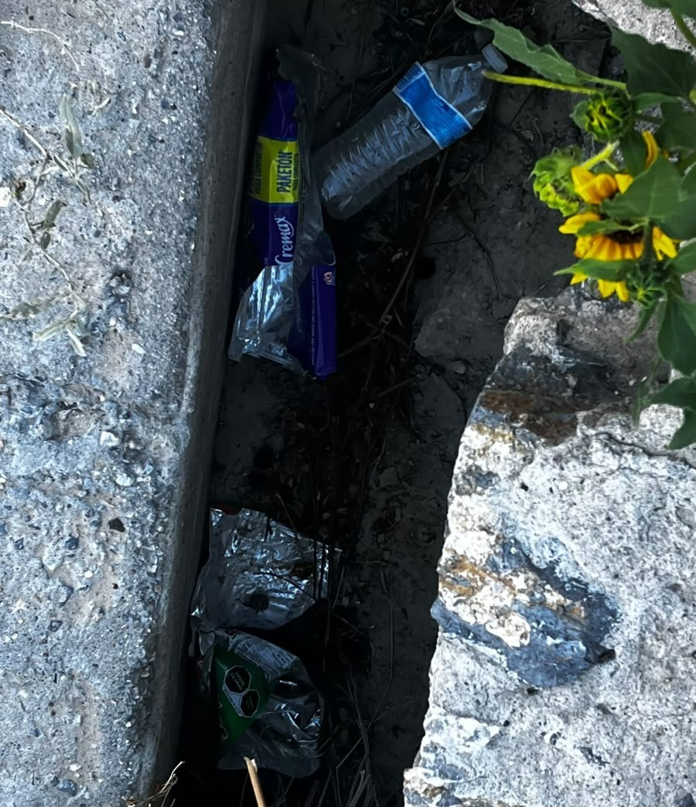
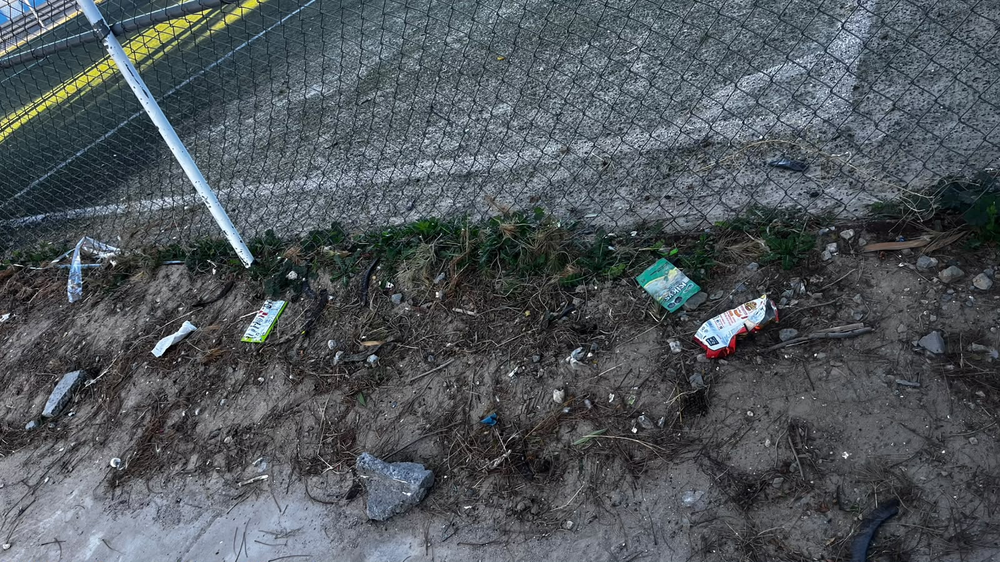
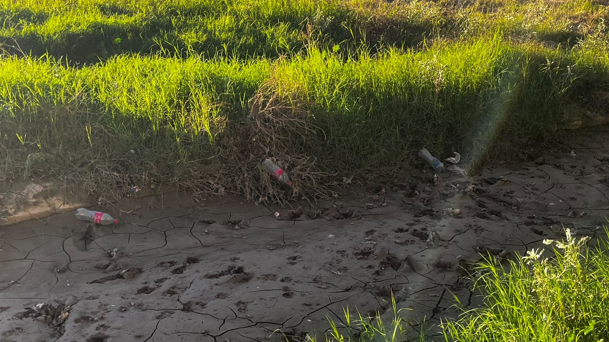
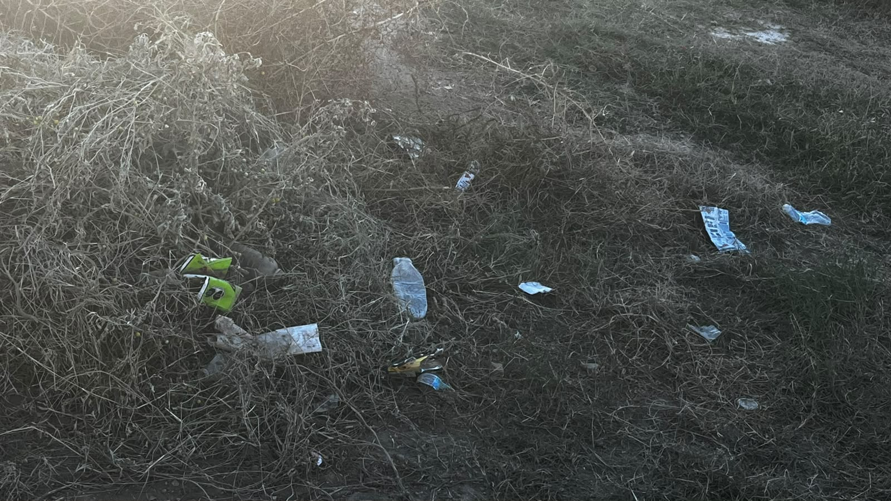

El reciclaje en nuestra comunidad
¿Qué residuos se generan?
En los hogares, calles y comercios de nuestra comunidad se generan principalmente:
- Residuos orgánicos: Restos de comida, cáscaras, podas y hojarasca.
- Plásticos: Envases PET, bolsas de compras, garrafones o recipientes domésticos.
- Papel, cartón, vidrio y metal: Cajas, envases de alimentos, botellas de vidrio, latas y chatarra ligera.
- Residuos voluminosos o especiales: Muebles viejos, aparatos electrónicos o llantas en desuso.
Consulta la clasificación legal de residuos en México.
¿Dónde se acumula más basura?
En nuestra comunidad, la basura suele concentrarse con mayor frecuencia en:
- Terrenos baldíos, esquinas solitarias y lotes sin barda.
- Parques, plazas públicas y áreas verdes.
- Canales, arroyos y drenajes
- Puntos donde se deja basura fuera de horario o sin recolectores disponibles.
Ver cómo afecta la acumulación de desechos al suelo.

¿Qué problemas existen actualmente?
Actualmente se observan problemáticas como la disposición inadecuada de residuos en la vía pública, la mezcla de desechos reciclables con basura general, el deterioro de los espacios públicos, posibles afectaciones a la salud y riesgos de obstrucción en desagües o zonas de escurrimiento. [En caso de la colonia de mi comunidad hay mucho descuido en drenajes, causando acumulaciones de agua].
Conoce más sobre los riesgos relacionados con el agua y drenajes.
Fotografías y evidencias del problema que existe en nuestra comunidad


